{kind=link}
{kind=link}
{kind=link}
{kind=link}


Winterthur 'Ortspost Poste Locale' and Zurich Cantonal issues
Schweiz - Suisse - Svizzera - Zwitzerland
Return To Catalogue -
Switzerland issues from 1850-1853 - Issues form 1854-1881 - Issues from 1882-1906 - Issues from 1907-1920
- Cantonal issues: Basel - Geneva - Neuchatel
- Vaud - Winterthur
- Zurich -
Fiscal Stamps - Miscellaneous;
railway, due, Campione etc. - Cancels
on first federal issues - Fournier
forgeries - Pro Juventute (Chilrens
welfare stamps) - Hotel Labels
Note: on my website many of the
pictures can not be seen! They are of course present in the
catalogue;
contact me if you want to purchase the catalogue.
The stamps of Switzerland often bear the name 'Helvetia'.
Several Cantons (provinces) issued their own stamps before the government issue of 1850:
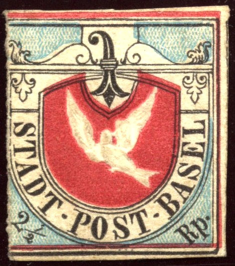 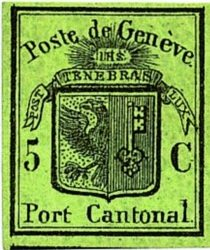
Basel 'Dove' and Geneva
issues
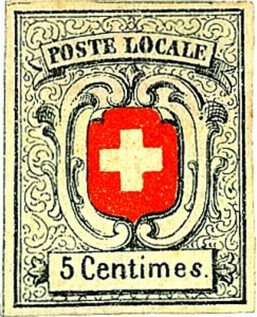 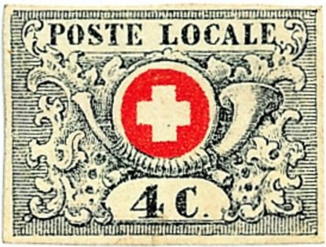
'POSTE LOCALE': Neuchatel and Vaud Cantonal issues
Winterthur 'Ortspost Poste Locale' and
Zurich Cantonal issues
Number of cantonal stamps issued:
| Canton | Value | Number of stamps issued | Remarks |
| Basel | 2 1/2 r | 41480 | 8000 proofs in green colour were also printed |
| Geneva | Double Geneva | 60000 | About 6000 were used as pairs |
| Small eagle | 120000 | ||
| Large eagle, light green | 100000 | ||
| Large eagle, dark green | 50000 | ||
| Envelope | 10000 | Unknown how many were cut and used as 'stamps' | |
| Neuchatel | 5 c | About 25000 | |
| Vaud | 4 c | 10000 | |
| 5 c | 100000 | ||
| Winterthur | 2 1/2 r | About 40000 to 50000 | |
| Zurich | 4 r | Total about 30000 | |
| About 10000 | Horizontal background lines | ||
| About 20000 | Vertical background lines | ||
| 120 | Reprint | ||
| 6 r | Total about 165000 | ||
| About 85000 | Horizontal background lines | ||
| About 80000 | Vertical background lines | ||
| 400 | Reprint |
Source: http://www.swissphila.ch/kantonal.html.
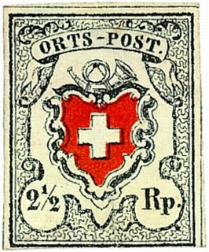
"ORTSPOST", "POSTE LOCALE", Rayon I, II and
III, all in similar designs
Issues from 1850-1853
Types of the 1850 Poste Locale and
Ortspost issue
Types of the 1850 Rayon I issue
Types of the 1850 issue Rayon II and III
Forgeries of the 1850 issue, part 1
Forgeries of the 1850 issue, part 2
Forgeries of the 1850 issue, part 3
(Sperati)
Forgeries of the 1850 issue, part 4
(Fournier)
Forgeries of the 1850 issue, part 5
(Fournier
Cancels on first federal issues
Switzerland issues from 1854-1881
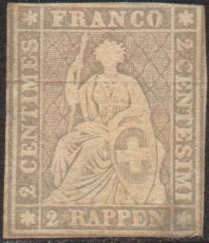 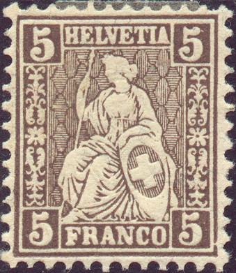
1854 Sitting Helvetia (so-called Strubel issue) and 1862 Sitting
Helvetia
Switzerland issues from 1882-1906
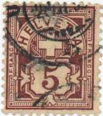
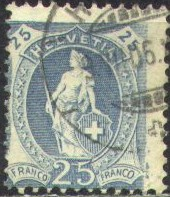
Switzerland issues from 1907-1920
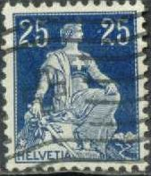
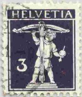
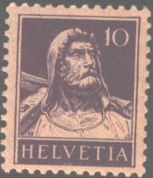

Example: fiscal stamp of Basel
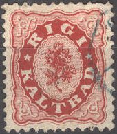
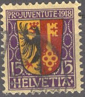
Switzerland Miscellanous, other:
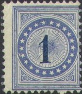
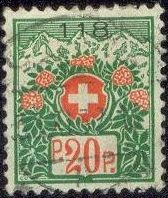
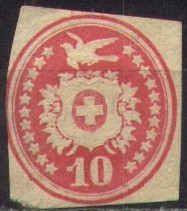
The stamps of Switzerland and especially the
cantonal issues are plagued with forgeries. J.F.Barrett writes in
'Forgeries, facsimiles and fakes.... what can be done?' in Tell,
vol.2 No.10 (1976) page 197:
'To give you an idea what we, the buyers, are faced with
(known types of forgeries in parenthesis): the Basle Dove (17),
Double Geneva (15), Single Genevas including the envelope (34),
Vaud (17), Neuenburg (Neuchatel) (9), Winterthur (7), Zurich 4
(14), Zurich 6 (20), Ortspost and Poste Locale (more than 3) and
Rayons 1-3 (at least 10).'
In this catalogue, many more forgeries than stated above are
shown for each of these areas. Some of the information on
forgeries available in this catalogue can be found at:
Basel forgeries
Geneva forgeries, part 1
Geneva forgeries, part 2
Vaud forgeries
Zurich forgeries, part 1
Zurich forgeries, part 2
Forgeries of the 1850 issue of
Switzerland, part 1
Forgeries of the 1850 issue of
Switzerland, part 2
Forgeries of the 1850 issue, part 3
(Sperati)
Forgeries of the 1850 issue, part 4
(Fournier)
Forgeries of the 1850 issue, part 5
(Fournier)
Switzerland Fournier forgeries
Switzerland Fournier forged cancels
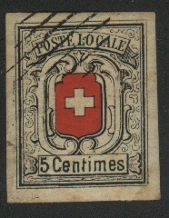


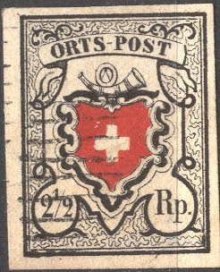

Switzerland Cantonal issues: common forgeries, printed in one sheet (with bar cancels, see images above).
The most dangerous forgeries are probably those of the forger Sperati. Between 1942 and 1953 he made 58 different forgeries of Switzerland and the Cantonal issues.
The most famous catalogue of Switzerland is the Zumstein catalogue (in German).
{kind=link}
{kind=link}
{kind=link}